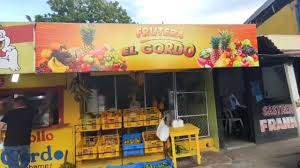
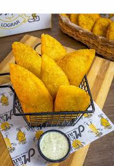

Puntos de fritos
Si lo que quieres es un buen frito de esos que suenan crocantes y vienen bien rellenos, aqui es donde es; desde arepa de huevo y carimañolas hasta empanadas con diferentes rellenos, todo acompañado con bebidas bien frias pa' bajarlo y salsas desde picantes hasta con sabores dulces que le meten el toque final. Esto no es cualquier comida, es cultura.
Horarios
Abierto de lunes a domingo de 6:30am a 10:00pm
Ubicacion


